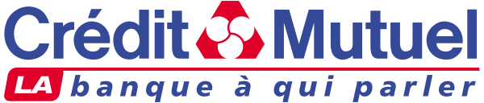
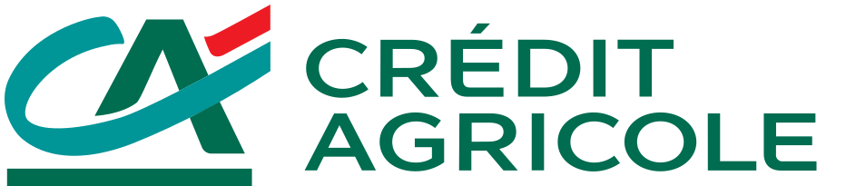

En bref
Pour un crédit immobilier en 2026, la banque la mieux notée est le Crédit Mutuel, avec 8,5/10 (relevé de démonstration). Il réunit des frais de dossier parmi les plus bas des réseaux, 1 % avec un minimum de 400 € dans la plupart de ses fédérations, et l'ensemble des prêts aidés. Le Crédit Agricole arrive deuxième avec 8,4/10, premier prêteur immobilier du pays, mais des frais très variables d'une caisse régionale à l'autre. BoursoBank complète le podium avec 8,2/10, sans frais de dossier ni indemnités de remboursement anticipé, mais réservée aux foyers qui gagnent au moins 30 000 € par an.
- Le taux moyen des crédits immobiliers s'établit à 3,31 % en août 2026 selon l'Observatoire Crédit Logement/CSA, hors assurance, pour une durée moyenne de 252 mois.
- Le taux d'usure applicable du 1er octobre au 31 décembre 2026 est de 5,40 % pour un prêt de 20 ans et plus, assurance et frais compris.
- Les frais de dossier vont de 0 € chez BoursoBank à 1 % du montant emprunté dans la plupart des banques de réseau, avec des minimums de 300 à 850 €.
- Les mensualités ne doivent pas dépasser 35 % des revenus nets, assurance comprise, sur 25 ans au plus, selon la règle du HCSF.
- Le Crédit Agricole détient 34,4 % des encours de crédit immobilier en France, devant le groupe BPCE (26,9 %) et le Crédit Mutuel (20,2 %).
Sommaire de ce comparatif
Nos critères et leur poids
Le taux est la première chose qu'on regarde, et c'est la seule qu'aucune banque n'affiche. Il se fixe au cas par cas, selon vos revenus, votre apport, la durée et la politique commerciale du moment, qui change d'un mois à l'autre et d'une agence à l'autre. Un classement des taux bancaires serait faux le jour de sa publication. Nous comparons donc ce qui est publié et stable, puis nous expliquons comment obtenir le meilleur taux.
| Critère | Poids | Ce qu'on regarde |
|---|---|---|
| Accessibilité | 30 % | Revenus minimums, montant minimum du projet, statuts professionnels acceptés, résidence |
| Frais annexes | 25 % | Frais de dossier, indemnités de remboursement anticipé, garantie demandée |
| Souplesse du prêt | 25 % | Modulation des mensualités, report d'échéances, PTZ et prêts aidés distribués |
| Accompagnement | 20 % | Agence, conseiller, parcours en ligne, couverture du territoire |
| Note globale | Synthèse | La moyenne pondérée des quatre critères, arrondie au dixième |
Poids fixés avant le relevé, identiques pour les dix banques.
Ce choix de poids a une conséquence directe. Une banque sans aucun frais de dossier mais fermée à une partie des emprunteurs ne peut pas prendre la tête. C'est ce qui arrive à BoursoBank, première sur les frais, troisième au classement.
Le classement des 10 banques
01

Le plus completFrais de dossier dès 400 €, prêts aidés8,5/1002

Le premier prêteur34,4 % des encours immobiliers8,4/1003 Le moins cher en frais0 € de frais de dossier8,2/10
Le moins cher en frais0 € de frais de dossier8,2/10
Le moins cher en frais0 € de frais de dossier8,2/10Le Crédit Mutuel prend la première place. Dans la plupart de ses fédérations, les frais de dossier sont de 1 % du montant emprunté avec un minimum de 400 €, le plus bas des grands réseaux, et le Crédit Mutuel Océan descend même à 250 €. Il distribue le PTZ et les prêts aidés, accepte salariés et indépendants, et son réseau couvre tout le territoire. Avec le CIC, qui applique les mêmes frais, le groupe détient 20,2 % des encours immobiliers. Son défaut tient à l'hétérogénéité des fédérations, dont les conditions varient d'une région à l'autre.
Le Crédit Agricole est deuxième, à un dixième. C'est le premier prêteur immobilier du pays, avec 34,4 % des encours, et ses caisses régionales connaissent le marché local mieux que personne, en ville comme à la campagne. Il perd des points sur la lisibilité des frais. Ils vont de 0,50 % avec un minimum de 700 € en Île-de-France à 1,40 % avec un plafond de 2 500 € dans le Finistère, et certaines caisses pratiquent un forfait de 500 €. La caisse des Savoie descend à 500 € pour les primo-accédants.
BoursoBank complète le podium. C'est la seule banque du panel qui ne facture ni frais de dossier ni indemnités de remboursement anticipé, deux postes qui pèsent souvent plusieurs milliers d'euros. La modulation des mensualités est possible dès le 13e mois, jusqu'à 30 % à la hausse, et le report de une à trois échéances est prévu. Mais l'accès est sélectif, 30 000 € de revenus annuels pour le foyer, un projet d'au moins 100 000 €, une caution Crédit Logement obligatoire, et ni PTZ ni prêt d'accession sociale. Les logements classés G au DPE sont exclus.
Derrière le podium, les écarts se resserrent. La Caisse d'Épargne et la Banque Populaire, les deux réseaux du groupe BPCE, appliquent 1 % avec des minimums de 350 à 850 € selon la banque régionale, et certaines caisses plafonnent les frais, à 1 050 € en Bourgogne Franche-Comté ou 1 500 € en Rhône Alpes. La Banque Postale prend 1 % avec 500 € minimum. La Société Générale est la seule grande banque nationale qui plafonne ses frais, à 2 000 €.
BNP Paribas, Hello bank! et LCL ferment la marche. BNP Paribas facture 0,99 % avec 650 € minimum, divisés par deux pour un dossier déposé en ligne. Hello bank!, sa banque en ligne, descend à 0,50 % avec 300 € minimum, mais sa distribution des prêts aidés n'est pas détaillée dans les sources que nous avons lues. LCL prend 1 % avec le minimum le plus élevé du panel, 850 €.
Les frais de dossier se négocient presque toujours. Dans ce classement, ils départagent des banques que le taux finira peut-être par classer autrement.
Le tableau comparatif des 10 banques
Chaque ligne reprend le tarif de la caisse ou de la fédération principale quand une banque mutualiste a plusieurs grilles. Les mentions « non relevé » signalent une information absente des sources que nous avons lues, pas une offre inexistante.
| Banque | Note /10 | Frais de dossier | Profils acceptés | Prêts aidés | Le point fort |
|---|---|---|---|---|---|
| Crédit MutuelNotre choix | 8,5 | 1 %, minimum 400 € dans la plupart des fédérations | Large, salariés et indépendants | PTZ et prêts aidés | Des frais bas et une offre complète |
| Crédit Agricole | 8,4 | De 0,50 % à 1,40 % selon la caisse | Large, réseau rural et urbain | PTZ et prêts aidés | Le premier prêteur du pays |
| BoursoBank | 8,2 | 0 € | Foyers à 30 000 € de revenus par an, projet de 100 000 € minimum | Ni PTZ ni PAS | Aucun frais de dossier ni de remboursement anticipé |
| Caisse d'Épargne | 8,0 | 1 %, minimum de 475 à 850 € selon la caisse | Large | PTZ et prêts aidés | Des plafonds de frais dans certaines caisses |
| Banque Populaire | 7,9 | 1 %, minimum de 350 à 800 € selon la banque | Large, forte présence auprès des indépendants | PTZ et prêts aidés | 200 € de frais pour les jeunes actifs en Bourgogne Franche-Comté |
| La Banque Postale | 7,7 | 1 %, minimum 500 € | Large | PTZ et prêts aidés | Un réseau de bureaux de poste |
| Société Générale | 7,6 | 1 %, de 500 à 2 000 € | Large | PTZ et prêts aidés | Des frais plafonnés à 2 000 € |
| BNP Paribas | 7,5 | 0,99 %, minimum 650 € | Large | PTZ et prêts aidés | Frais divisés par deux en ligne |
| Hello bank! | 7,3 | 0,50 %, minimum 300 € | Clients en ligne | Non relevé | Les frais les plus bas des banques qui en facturent |
| LCL | 7,2 | 1 %, minimum 850 € | Large | PTZ et prêts aidés | Un parcours en agence ou à distance |
Frais de dossier relevés dans les plaquettes tarifaires au 1er mars 2026 par MoneyVox, caisse ou fédération principale quand les tarifs varient. Conditions BoursoBank d'après Pretto, mises à jour en octobre 2026. Notes, relevé de démonstration de la rédaction, octobre 2026.
Trois enseignements. Le premier, c'est que 1 % du montant emprunté reste la norme des banques de réseau, soit 2 500 € pour un prêt de 250 000 € quand aucun plafond ne s'applique. Le deuxième, c'est que les banques en ligne cassent ce poste, BoursoBank à zéro, Hello bank! à 0,50 %. Le troisième, c'est que les réseaux mutualistes restent incontournables pour les prêts aidés. Un primo-accédant éligible au PTZ ne le trouvera pas chez BoursoBank.
Les taux et les règles du marché en octobre 2026
Les banques ne publient pas leurs taux, mais le marché a des repères publics. Les voici, avec leur source.
| Repère | Valeur | Source |
|---|---|---|
| Taux moyen, toutes durées | 3,31 % en août 2026 | Observatoire Crédit Logement/CSA |
| Taux moyen dans le neuf et dans l'ancien | 3,24 % et 3,30 % | Observatoire Crédit Logement/CSA |
| Durée moyenne des prêts | 252 mois | Observatoire Crédit Logement/CSA |
| Part des prêts à 25 ans ou plus | 49,3 % | Observatoire Crédit Logement/CSA |
| Taux d'usure, 20 ans et plus | 5,40 % du 1er octobre au 31 décembre 2026 | Journal officiel du 26 septembre 2026 |
| Taux d'usure, de 10 à moins de 20 ans | 4,68 % | Journal officiel du 26 septembre 2026 |
| Taux d'effort maximum | 35 % des revenus nets, assurance comprise | Haut Conseil de stabilité financière |
| Durée maximum | 25 ans, 27 ans avec différé dans le neuf | Haut Conseil de stabilité financière |
Taux moyens hors assurance et coût des sûretés. Le taux d'usure est un taux annuel effectif global, assurance et frais compris.
La tendance est à la hausse. Le taux moyen a gagné 0,15 point depuis décembre 2025, en partie parce que les prêts longs, plus chers, pèsent davantage. Les baromètres des courtiers, qui simulent les conditions après négociation, affichent des taux sur 20 ans entre 3,5 % et 3,8 % selon les sources ce mois-ci. Après un bond de 33 % des crédits à l'habitat en 2025, à 146,5 milliards d'euros selon la Banque de France, les banques restent prêteuses, mais plus regardantes sur l'apport.
Le HCSF laisse aux banques une marge, 20 % de leur production trimestrielle peut sortir des règles des 35 % et des 25 ans, en priorité pour la résidence principale et les primo-accédants. C'est cette marge qui explique qu'un dossier refusé dans une banque passe parfois dans une autre.
Crédit Mutuel, Crédit Agricole ou BoursoBank, comment choisir
Vous êtes primo-accédant et éligible au PTZ
Allez voir un réseau qui le distribue, Crédit Mutuel, Crédit Agricole, Caisse d'Épargne ou Banque Populaire. Le PTZ ne couvre qu'une partie de l'achat, la banque qui l'accorde porte en général le prêt principal.
Vous avez de bons revenus et un apport
Mettez BoursoBank en concurrence. Sans frais de dossier et sans indemnités de remboursement anticipé, elle fait économiser plusieurs milliers d'euros, et un revendeur dans dix ans profitera de l'absence d'indemnités.
Vous êtes indépendant ou chef d'entreprise
Privilégiez la banque qui tient déjà votre compte professionnel, souvent une Banque Populaire, un Crédit Agricole ou un Crédit Mutuel. BoursoBank demande cinq ans d'ancienneté aux chefs d'entreprise.
Vous voulez le meilleur taux
Demandez au moins trois offres, ou passez par un courtier. Négociez ensuite les frais de dossier et l'assurance emprunteur, que la loi Lemoine permet de changer à tout moment, sans frais. Sur un prêt de 20 ans, l'assurance peut peser autant que les intérêts.
Notre verdict
Le Crédit Mutuel est la banque la mieux notée pour un crédit immobilier en 2026, avec 8,5/10. Il gagne sur les frais de dossier des réseaux, la palette de prêts aidés et l'accessibilité, et ne perd que sur les écarts entre fédérations. Le Crédit Agricole suit avec 8,4/10, premier prêteur du pays, derrière sur la lisibilité de ses frais.
Si vous êtes primo-accédant, commencez par un réseau mutualiste, Crédit Mutuel ou Crédit Agricole. Si vos revenus le permettent, mettez BoursoBank en concurrence pour ses frais nuls. Dans tous les cas, comparez au moins trois offres, le taux final départage les banques mieux qu'aucun classement.
Questions fréquentes
Quelle banque choisir pour un crédit immobilier en 2026 ?
Le Crédit Mutuel obtient la meilleure note de notre comparatif avec 8,5/10, pour ses frais de dossier dès 400 € et sa palette de prêts aidés. Le Crédit Agricole est deuxième avec 8,4/10, premier prêteur du pays, BoursoBank troisième avec 8,2/10, sans frais de dossier mais réservée aux foyers à 30 000 € de revenus par an.
Quel est le taux moyen d'un crédit immobilier ?
3,31 % en août 2026 toutes durées confondues selon l'Observatoire Crédit Logement/CSA, hors assurance, 3,24 % dans le neuf et 3,30 % dans l'ancien. Les baromètres des courtiers affichent entre 3,5 % et 3,8 % sur 20 ans en octobre 2026 selon les sources.
Quelle banque ne facture pas de frais de dossier ?
BoursoBank, Fortuneo et Monabanq ne facturent aucun frais de dossier d'après les plaquettes tarifaires relevées au 1er mars 2026. Dans les banques de réseau, la norme est de 1 % du montant emprunté, avec un minimum de 300 à 850 €.
Quel est le taux d'usure en ce moment ?
Du 1er octobre au 31 décembre 2026, le taux d'usure est de 5,40 % pour un prêt à taux fixe de 20 ans et plus, 4,68 % de 10 à moins de 20 ans et 4,09 % sous 10 ans. Il s'agit d'un taux annuel effectif global, assurance et frais compris.
Combien peut-on emprunter avec son salaire ?
Les mensualités, assurance comprise, ne doivent pas dépasser 35 % des revenus nets, sur 25 ans au plus selon les règles du HCSF. Avec 3 000 € nets par mois, la mensualité maximale est donc de 1 050 €, assurance incluse.
Comment sont notées les banques ?
Les notes sont un relevé de démonstration de la rédaction, établi sur quatre critères. Dans ce comparatif, l'accessibilité pèse 30 %, les frais annexes 25 %, la souplesse du prêt 25 % et l'accompagnement 20 %, la note globale étant leur moyenne pondérée. Les taux, non publiés, ne sont pas notés.
Notre méthode
Ce comparatif repose sur des données publiques, vérifiables une par une, et sur des critères affichés avant le classement.
- Les tarifs sont relevés dans les plaquettes tarifaires et les pages officielles des établissements, frais de tenue de compte et de carte compris
- Les conditions d'ouverture (revenus, âge, justificatifs, délai) sont vérifiées sur le parcours d'ouverture de chaque offre
- Les plafonds réglementaires (frais d'incident, offre clientèle fragile, droit au compte) sont ceux publiés par la Banque de France et service-public.fr
- Les avis clients sont lus sur les stores d'applications et Trustpilot, en retenant les motifs récurrents plutôt que la note seule
- Chaque critère est noté sur 10 et la grille de notation est identique d'un comparatif à l'autre